KRAFTBINDER FORM
Однокомпонентное полиуретановое связующее (клей) для изготовления формованных изделий из резиновой и каучуковой крошки. Не содержит органические растворители.
Основные свойства:- Оптимальная вязкость, хорошая совместимость с различными видами фракционированных наполнителей.
- Подходит для большинства видов технологического оборудования (форм, прессов) и широкого диапазона параметров переработки (температура и давление при прессовании, время выдержки и т.д.)
- Безопасный и удобный в работе продукт для профессионального применения
| Технические характеристики | |
|---|---|
| Состав | Полиуретановый преполимер. Целевые добавки |
| Внешний вид | Однородная прозрачная жидкость. |
| Массовая доля изоцианатных групп, % | 9,0±0,5 по ТУ |
| Динамическая вязкость при 23°С, мПа*с | 5500±1000 |
| Плотность, г/см3 | 1,09±0,03 |
| Рекомендованный фракционный рассев крошки | от 1,0 мм до 4,0 мм |
| Упаковка | 215 кг (стальные бочки), 20 кг (металлическое ведро с герметичной крышкой, 5 кг (пробник) |